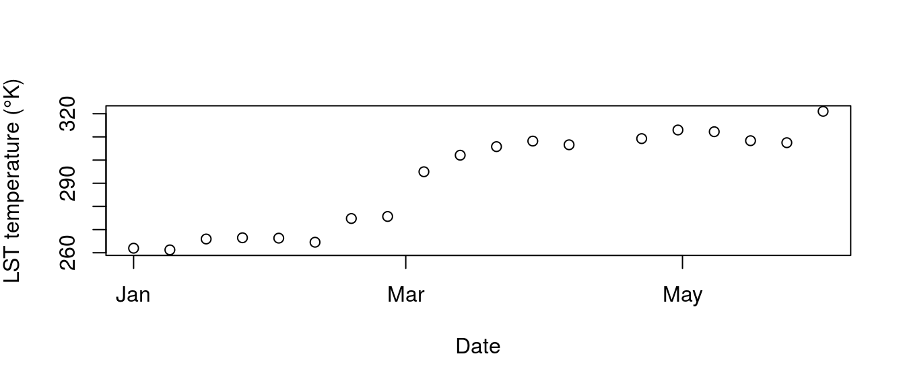

vignettes/modistools-vignette.Rmd
modistools-vignette.RmdThe MODISTools package has as goal to facilitate the interface between R and the MODIS Land Product Subset API at the Oak Ridge National Laboratory DAAC. This programmatic interface to the ‘MODIS Land Products Subsets’ web services allows for easy downloads of ‘MODIS’ time series directly to your R workspace or your computer. Below an examples are provided on how to download a MODIS time series as well as list ancillary data.
In order to assess which products are available, which product bands are provided and which temporal range is covered one has to list these ancillary data. All these options can be queried using the mt_*() functions.
To list all available products use the mt_products() function.
products <- mt_products()
head(products)
#> product
#> 1 MCD12Q1
#> 2 MCD15A2H
#> 3 MCD15A3H
#> 4 MOD09A1
#> 5 MOD11A2
#> 6 MOD13Q1
#> description
#> 1 MODIS/Terra+Aqua Land Cover Type (LC) Yearly L3 Global 500 m SIN Grid
#> 2 MODIS/Terra+Aqua Leaf Area Index/FPAR (LAI/FPAR) 8-Day L4 Global 500 m SIN Grid
#> 3 MODIS/Terra+Aqua Leaf Area Index/FPAR (LAI/FPAR) 4-Day L4 Global 500 m SIN Grid
#> 4 MODIS/Terra Surface Reflectance (SREF) 8-Day L3 Global 500m SIN Grid
#> 5 MODIS/Terra Land Surface Temperature and Emissivity (LST) 8-Day L3 Global 1 km SIN Grid
#> 6 MODIS/Terra Vegetation Indices (NDVI/EVI) 16-Day L3 Global 250m SIN Grid
#> frequency resolution_meters
#> 1 Yearly 500
#> 2 8-Day 500
#> 3 4-Day 500
#> 4 8-Day 500
#> 5 8-Day 1000
#> 6 16-Day 250To list all available bands for a given product use the mt_bands() function.
bands <- mt_bands(product = "MOD11A2")
head(bands)
#> band description units valid_range
#> 1 Day_view_angl View zenith angle of day observation degree 0 to 130
#> 2 Emis_32 Band 32 emissivity <NA> 1 to 255
#> 3 Emis_31 Band 31 emissivity <NA> 1 to 255
#> 4 QC_Night Nighttime LST Quality indicators <NA> 0 to 255
#> 5 Day_view_time Local time of day observation hrs 0 to 240
#> 6 LST_Day_1km Daytime Land Surface Temperature Kelvin 7500 to 65535
#> fill_value
#> 1 255
#> 2 0
#> 3 0
#> 4 <NA>
#> 5 255
#> 6 0To list all available dates (temporal coverage) for a given product and location use the mt_dates() function.
dates <- mt_dates(product = "MOD11A2", lat = 42, lon = -110)
head(dates)
#> modis_date calendar_date
#> 1 A2000049 2000-02-18
#> 2 A2000057 2000-02-26
#> 3 A2000065 2000-03-05
#> 4 A2000073 2000-03-13
#> 5 A2000081 2000-03-21
#> 6 A2000089 2000-03-29Once you decide on which data to download using the above functions you can use these parameters to download a time series using the mt_subset() function. The below query downloads MOD11A2 based daytime lands surface temperatures. The location is named ‘testsite’ and only covers the first six months of 2004. The output is saved to a variable called subset in the R workspace (as defined by the parameter internal = TRUE, when set to FALSE the data is written to file).
# download data
subset <- mt_subset(product = "MOD11A2",
lat = 40,
lon = -110,
band = "LST_Day_1km",
start = "2004-01-01",
end = "2004-06-01",
km_lr = 0,
km_ab = 0,
site_name = "testsite",
internal = TRUE)
head(subset)
#> $header
#> $header$xllcorner
#> [1] "-9370036.39"
#>
#> $header$yllcorner
#> [1] "4447802.08"
#>
#> $header$cellsize
#> [1] "926.625433055834"
#>
#> $header$nrows
#> [1] 1
#>
#> $header$ncols
#> [1] 1
#>
#> $header$band
#> [1] "LST_Day_1km"
#>
#> $header$units
#> [1] "Kelvin"
#>
#> $header$scale
#> [1] "0.02"
#>
#> $header$latitude
#> [1] 40
#>
#> $header$longitude
#> [1] -110
#>
#> $header$site
#> [1] "testsite"
#>
#> $header$product
#> [1] "MOD11A2"
#>
#> $header$start
#> [1] "2004-01-01"
#>
#> $header$end
#> [1] "2004-06-01"
#>
#> $header$complete
#> [1] TRUE
#>
#>
#> $data
#> modis_date calendar_date band tile proc_date pixel data
#> 1 A2004001 2004-01-01 LST_Day_1km h09v05 2015212185706 1 13098
#> 2 A2004009 2004-01-09 LST_Day_1km h09v05 2015212201022 1 13062
#> 3 A2004017 2004-01-17 LST_Day_1km h09v05 2015212213103 1 13297
#> 4 A2004025 2004-01-25 LST_Day_1km h09v05 2015213005429 1 13323
#> 5 A2004033 2004-02-02 LST_Day_1km h09v05 2015213090158 1 13315
#> 6 A2004041 2004-02-10 LST_Day_1km h09v05 2015213165253 1 13227
#> 7 A2004049 2004-02-18 LST_Day_1km h09v05 2015216182840 1 13739
#> 8 A2004057 2004-02-26 LST_Day_1km h09v05 2015217020635 1 13783
#> 9 A2004065 2004-03-05 LST_Day_1km h09v05 2015217091316 1 14748
#> 10 A2004073 2004-03-13 LST_Day_1km h09v05 2015217164857 1 15105
#> 11 A2004081 2004-03-21 LST_Day_1km h09v05 2015217230030 1 15290
#> 12 A2004089 2004-03-29 LST_Day_1km h09v05 2015218055617 1 15410
#> 13 A2004097 2004-04-06 LST_Day_1km h09v05 2015218215903 1 15330
#> 14 A2004105 2004-04-14 LST_Day_1km h09v05 2015219063436 1 0
#> 15 A2004113 2004-04-22 LST_Day_1km h09v05 2015219140857 1 15463
#> 16 A2004121 2004-04-30 LST_Day_1km h09v05 2015219231453 1 15649
#> 17 A2004129 2004-05-08 LST_Day_1km h09v05 2015220070159 1 15612
#> 18 A2004137 2004-05-16 LST_Day_1km h09v05 2015220154043 1 15418
#> 19 A2004145 2004-05-24 LST_Day_1km h09v05 2015220231431 1 15375
#> 20 A2004153 2004-06-01 LST_Day_1km h09v05 2015223193116 1 16052The output format is a nested list with the true data provided as a tidy data frame, as shown above. When witten to a csv, when the parameter ‘internal’ is set to FALSE, the same information is retained. Data can be read back into the same format with the included mt_read() function (see below).
Note that when a a region is defined using km_lr and km_ab multiple pixels might be returned. These are indexed using the ‘pixel’ column in the data frame containing the time series data. The remote sensing values are listed in the ‘data’ column. When no band is specified all bands of a given product are returned, be mindful of the fact that different bands might require different multipliers to represent their true values.
An example plot, below, of the downloaded daytime land surface temperature is given below. The data is first converted with the appropriate multiplier (see header info) and the fill values removed. The data shows the gradual increase in temperature from winter into summer (in the northern hemisphere).
# create a plot of the data (i.e. daytime land surface temperature, LST)
# the data has a multiplier of 0.02 in order to convert stored values
# you can extract the multiplier (if applicable) from the data header
date <- as.Date(subset$data$calendar_date)
temperature <- subset$data$data * as.double(subset$header$scale)
temperature[temperature == 0] <- NA
plot(date,
temperature,
xlab = "Date",
ylab = expression("LST temperature (" * degree * "K)"))
When a large selection of locations is needed you might benefit from using the batch download function batch_subset(), which provides a wrapper around the mt_subset() function in order to speed up large download batches. This function has a similar syntax to mt_subset() but requires a data frame defining site names (site_name) and locations (lat / lon) (or a comma delimited file with the same structure) to specify a list of download locations.
# create data frame with a site_name, lat and lon column
# holding the respective names of sites and their location
df <- data.frame("site_name" = paste("test",1:2), stringsAsFactors = FALSE)
df$lat <- 40
df$lon <- -110
# an example batch download data frame
print(df)
#> site_name lat lon
#> 1 test 1 40 -110
#> 2 test 2 40 -110
# test batch download
subsets <- mt_batch_subset(df = df,
product = "MOD11A2",
band = "LST_Day_1km",
internal = TRUE,
start = "2004-01-01",
end = "2004-02-28",
out_dir = "~")
print(str(subsets))
#> List of 2
#> $ test 1:List of 2
#> ..$ header:List of 15
#> .. ..$ xllcorner: chr "-9370036.39"
#> .. ..$ yllcorner: chr "4447802.08"
#> .. ..$ cellsize : chr "926.625433055834"
#> .. ..$ nrows : int 1
#> .. ..$ ncols : int 1
#> .. ..$ band : chr "LST_Day_1km"
#> .. ..$ units : chr "Kelvin"
#> .. ..$ scale : chr "0.02"
#> .. ..$ latitude : num 40
#> .. ..$ longitude: num -110
#> .. ..$ site : chr "test 1"
#> .. ..$ product : chr "MOD11A2"
#> .. ..$ start : chr "2004-01-01"
#> .. ..$ end : chr "2004-02-28"
#> .. ..$ complete : logi TRUE
#> ..$ data :'data.frame': 8 obs. of 7 variables:
#> .. ..$ modis_date : chr [1:8] "A2004001" "A2004009" "A2004017" "A2004025" ...
#> .. ..$ calendar_date: chr [1:8] "2004-01-01" "2004-01-09" "2004-01-17" "2004-01-25" ...
#> .. ..$ band : chr [1:8] "LST_Day_1km" "LST_Day_1km" "LST_Day_1km" "LST_Day_1km" ...
#> .. ..$ tile : chr [1:8] "h09v05" "h09v05" "h09v05" "h09v05" ...
#> .. ..$ proc_date : chr [1:8] "2015212185706" "2015212201022" "2015212213103" "2015213005429" ...
#> .. ..$ pixel : chr [1:8] "1" "1" "1" "1" ...
#> .. ..$ data : int [1:8] 13098 13062 13297 13323 13315 13227 13739 13783
#> ..- attr(*, "class")= chr "MODISTools"
#> $ test 2:List of 2
#> ..$ header:List of 15
#> .. ..$ xllcorner: chr "-9370036.39"
#> .. ..$ yllcorner: chr "4447802.08"
#> .. ..$ cellsize : chr "926.625433055834"
#> .. ..$ nrows : int 1
#> .. ..$ ncols : int 1
#> .. ..$ band : chr "LST_Day_1km"
#> .. ..$ units : chr "Kelvin"
#> .. ..$ scale : chr "0.02"
#> .. ..$ latitude : num 40
#> .. ..$ longitude: num -110
#> .. ..$ site : chr "test 2"
#> .. ..$ product : chr "MOD11A2"
#> .. ..$ start : chr "2004-01-01"
#> .. ..$ end : chr "2004-02-28"
#> .. ..$ complete : logi TRUE
#> ..$ data :'data.frame': 8 obs. of 7 variables:
#> .. ..$ modis_date : chr [1:8] "A2004001" "A2004009" "A2004017" "A2004025" ...
#> .. ..$ calendar_date: chr [1:8] "2004-01-01" "2004-01-09" "2004-01-17" "2004-01-25" ...
#> .. ..$ band : chr [1:8] "LST_Day_1km" "LST_Day_1km" "LST_Day_1km" "LST_Day_1km" ...
#> .. ..$ tile : chr [1:8] "h09v05" "h09v05" "h09v05" "h09v05" ...
#> .. ..$ proc_date : chr [1:8] "2015212185706" "2015212201022" "2015212213103" "2015213005429" ...
#> .. ..$ pixel : chr [1:8] "1" "1" "1" "1" ...
#> .. ..$ data : int [1:8] 13098 13062 13297 13323 13315 13227 13739 13783
#> ..- attr(*, "class")= chr "MODISTools"
#> NULLIn both download functions data can be written to a csv file in a particular directory using the ‘internal’ and ‘out_dir’ function options. The mt_read() function allows you to read in these csv files easily and into the same data structure as used when downloading directy into your R workspace.
[site_name]_[product]_[start]_[end].csvThe data can be read back into the original nested structed using mt_read().